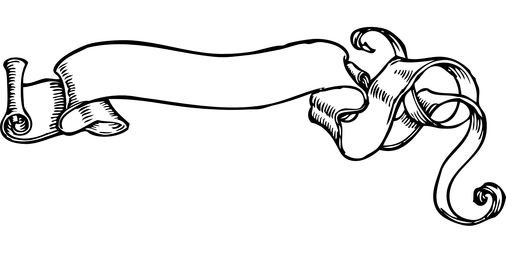

| Alex Bédard |
| L'être humain |
|
340-102-MQ Groupe 05 |
| Portfolio |
|
Travail présenté à Mme Barbara Gagné |
| Collège Lionel-Groulx |
| 15 novembre 2024 |
|  |
|
|
|
Valse Brillante Op. 18 - Composé par Frédéric Chopin - Interprété par Valentina Lisitsa |
| Réflexions sur la Vie et le Destin | Le sens de la vie: Confort ou Défi? |
|---|
| Est-ce préférable pour moi de vivre une vie sans but, mais confortable ou une vie sensée, mais remplie de défis et d’inconforts? Pour moi, une vie unidimensionnelle dans laquelle on ne recherche que le confort immédiat et que l’on ne laisse aucune place aux défis est une vie dans laquelle on refuse le progrès et l’évolution. Bien que l’inconfort soi désagréable, mais c’est le seul moyen de progresser et d’acquérir de nouvelles connaissances et aptitudes. Si l’on n’accepte pas dans notre vie la frustration de se sentir incompétent dans un domaine, on ne deviendra jamais doué dans quoi que ce soit. L’humain à l’instinct, à sa naissance, de surmonter les défis et peu le perdre avec l’âge s’il se renferme dans sa zone de confort. Combien de fois un enfant tombe-t-il en apprenant à marcher? Combien de frustration vie-t-il en apprenant à parler et à écrire? Cela prouve pour moi que l’échec et la souffrance sont essentiels à l’évolution de l’être humain et que, sans ceux-ci, il ne deviendrait rien. Tous les plus grands penseurs et inventeurs ont connu d’innombrables échecs avant de connaitre le moindre succès. Lorsque l’on a un but, un sens de direction, la souffrance n’est que temporaire et elle mènera vers un plus grand confort, celui de l’accomplissement. |
| Conformité sociale ou individualité? |
| Doit-on se soumettre aux normes et aux valeurs de la société ou créer notre propre voie? Pour moi, la question est vite répondue, car elle présente un paradoxe si l’on choisit de dire que l’on doit se soumettre aux normes. Si l’on est tenue d’obéir aux normes sociales et que l’on ne peut pas nous même créer les nôtres, alors pourquoi ceux qui ont créé les normes ont-ils pu créer les leurs? Si notre propre système de valeur, de normes n’est pas valide, alors celui que la société a établi au travers des époques n’est pas valide non plus, car il a été créé par des mortels comme nous. Je crois en l’égalité absolue de tous les êtres humains et que personne ne détient la vérité. Le seul guide de nos actions se trouve en nous. Il suffit de ne pas agir seulement en fonction de la norme, mais de s’arrêter et de se demander si l’on trouve que cela a du sens et si c’est comme cela que nous désirons agir. Par exemple, pour moi, ce n’est pas étrange de ne pas vouloir d’enfants ou de ne pas vouloir partager sa vie à deux, comme le font la plupart des gens. Je ne vais pas changer d’avis pour plaire aux valeurs sociales ou pour me fondre dans la masse. Je vais changer d’avis si j’évolue et que ma propre vision change. Beaucoup de personnes suivent la parade sans jamais se demander s’ils font vraiment ce qu’ils veulent de leur vie. |
| Amor Fati: Acceptation ou Ressentiment? |
| Accepter tout ce qui m’arrive, ou être envahi par le ressentiment? Il est facile de dire que l’on va accepter ce qui nous arrive sans laisser les émotions nous consumer, mais il est beaucoup plus compliqué de l’appliquer réellement. Néanmoins, je crois qu’il est possible d’éventuellement se conditionner à réagir de la sorte face à l’adversité et je tente graduellement d’apprendre à le faire. J’ai plus de facilité à accepter des situations sans ressentir de frustration lorsque je n’ai aucun contrôle sur ce qui arrive et que je ne peux pas remédier à la situation. Il suffit de comprendre que je ne suis que spectateur de cette partie de ma vie et que cela ne sert à rien d’en ressentir les émotions. Il en est de même pour une situation pour laquelle je peux agir immédiatement, pas besoin de ressentir quoi que ce soit, il suffit d’agir. Le plus dur, c’est lorsque je suis devant un nouveau défi, sur lequel j’ai le plein contrôle, mais qui demande de la discipline, de la détermination et de la patience. Dans ce cas précis, je sais que quelque chose va demander beaucoup d’effort et de temps, je sais que cela sera difficile et que je serai coincé dans cette situation jusqu’à ce que j’aie fait les démarches nécessaires pour m’en sortir. Je crois que l’acception est la première étape pour enclencher un changement chez une personne, puisque le ressentiment et la colère sont des freins qui nous empêchent d’entamer la moindre action qui nous permettra de remédier à toute situation. |
| Retour à la table des matières |
| Réflexions sur la résilience |
|---|
| Résumé du texte de Florence Ambrosino |
|
À la suite d’un traumatisme intense, on peut faire preuve de résilience pour évoluer et se développer en
tant que personne. Contrairement à la fausse croyance populaire, cela ne nous rendra pas plus forts
qu’avant, mais plutôt différents. Il est important d’extérioriser ce que l’on ressent pour évacuer la
souffrance. Dans le cas contraire, lorsqu’on garde notre traumatisme pour nous, il ne fera que grandir
en nous et deviendra ancré dans notre mémoire. La résilience se traduit littéralement par la capacité de résistance d’un matériau aux chocs et en étant appliquée à l’humain, elle signifie une force morale, donc également à une capacité à faire face aux chocs et aux traumatismes. L’humain résilient peut être comparé à se ce qui se passe lorsque quelque chose d’inconscient est détruit ou grandement abîmé, il va continuer d’exister en prenant une autre forme s’il le faut. Il ne sera pas meilleur ou moins bien qu’avant, simplement différent. Le fait de s’exprimer sur un traumatisme aide grandement à l’atténuation des symptômes pouvant survenir après un choc. Le manque d’attention, d’affection et d’interactions chez des orphelins a physiquement changé leurs cerveaux. Ces enfants ont perdu leurs repères et sont devenus agressifs puisqu’ils n’avaient aucun moyen d’exprimer sainement leurs émotions et leurs angoisses. Au contraire, les enfants de la rue en Haïti ont fait preuve de résilience durant un tremblement de terre parce que leur style de vie difficile les a forgés à vivre des situations semblables. Il existe trois types de facteurs qui expliquent la capacité de résilience de quelqu’un : individuels, familiaux et sociaux. Entre autres, la génétique joue un rôle dans cette capacité, ainsi que l’idéologie et la religion. La moitié de cette capacité est innée, l’autre est acquise. La résilience est un concept important dans le domaine de la santé. Il est primordial pour les patients qui subissent de graves accidents ou qui sont atteints de maladies incurables de pouvoir s’exprimer pour pouvoir se libérer d’une partie de leur souffrance. |
| La leçon de résilience de Boris Cyrulnik |
| Quelqu’un qui a développé des facteurs de protection peut déclencher par lui-même le processus de résilience. Tandis qu’au contraire, quelqu’un qui a développé des facteurs de vulnérabilité aura besoin d’aide extérieur pour démarrer le même processus et ils affronteront moins bien l’épreuve. La société change la hiérarchie de ses valeurs morales lors de périodes de crise. Durant une guerre, on sacrifie les jeunes hommes en les envoyant sur le champ de bataille. Suite à une catastrophe naturelle, la nature change de forme et reprend son cours, mais d’une manière différente. Il en est de même pour la société après une catastrophe sociale. La société change ses valeurs et ses façons de fonctionner. Il s’agit de résilience sociale. |
| Les Facteurs de résilience |
|
1. Adopter un point de vue optimiste sans être dans l’illusion. 2. Avoir un sens de moralité et de préconiser ce qui est bien plutôt que ce qui est mal. 3. Être connecté avec la spiritualité et de faire parti d’une communauté avec laquelle on connecte. 4. Utiliser l’humour pour dédramatiser les traumatismes et réduire le stress. 5. S’identifier à un modèle positif ou éviter de s’identifier à un modèle négatif. 6. Avoir du soutien social pour éviter de se sentir isolé. 7. Pouvoir faire face à ses peurs et éviter de les fuir malgré les risques. 8. Avoir une mission claire pour ressentir de l’accomplissement. 9. Avoir une bonne condition physique pour calmer l’esprit. 10. Garder le cerveau occupé pour éviter de perdre la raison. Je devrais essayer d’adopter une vision plus optimiste de la vie et des défis que je rencontre en arrêtant de penser aux potentiels échecs. Je crois utiliser mon sens de la moralité la plupart du temps en agissant dans le sens de ce que je crois être le bien commun plutôt que ce que je préfère à l’instant. J’ai tendance à utiliser l’humour lors des moments plus difficiles pour éviter de penser de manière trop dramatique. Je ne sais pas si cela serait le cas si je vivais une situation vraiment grave, mais j’espère que j’aurais le même réflexe. Depuis quelque temps, j’ai commencé à m’ouvrir plus à mon entourage pour obtenir du soutien social par rapport à mes angoisses et mes peurs. J’ai remarqué que je me sens beaucoup moins anxieux depuis que j’extériorise mes émotions et que je suis moins renfermé sur moi-même. J’ai plusieurs buts et missions à court, moyen et long terme et cela me donne de motivation dans la vie de tous les jours. Je ne serais pas capable de vivre sans avoir aucun but clair. |
| Retour à la table des matières |
|
|
|
Hungarian Melody D.817 - Composé par Franz Schubert - Interprété par Mathieu Gaudet |
| Le Ça, Le Moi, Le Surmoi |
|---|
| Présentation d'un personnage dominé par son Ça |
| Monsieur X est dominé par son inconscient, par son Ça. Il laisse ses actions être guidés par ses pulsions intérieures. Bien qu’il ait eu accès à une éducation complète et que ses proches aient tenté de lui inculquer des valeurs et des règles morales, Monsieur X n’est pas influencé par son Surmoi. Pour que ses actions soient censurées par son inconscient, il faudrait qu’il ait un fort désir de perfection, qu’il ait un désir de répondre aux exigences de la société et de ce qu’on attend de lui. Monsieur n’arrive pas à garder un emploi bien longtemps, car il finit toujours par insulter un collègue ou un client avec qui il n’est pas d’accord. Il ne vise qu’à satisfaire son besoin immédiat d’exprimer le fond de sa pensée sans songer à ce qui est socialement acceptable. S’il était connecté avec son Moi, il refoulerait ses pensées et il prétendrait être d’accord pour garder son emploi. Monsieur X a comme priorité son propre plaisir immédiat. Il ne fait que jouer à des jeux vidéo toute la journée et néglige tout le monde autour de lui. Il est incapable de filtrer ses désirs et de les satisfaire avec modération. Il consomme de la malbouffe en grande quantité et ne se force jamais pour manger autre chose. Il n’écoute que son désir qu’il a envers la nourriture qu’il aime. Il sait pourtant au fond qu’il doit manger de bons aliments pour être en santé, mais il n’utilise pas ses connaissances pour prendre ses décisions, il n’écoute que son Ça. Monsieur X est dominé par ses pulsions, il vit comme un animal. |
| Retour à la table des matières |
|
|
| Jean-Paul Sartre |
|---|
| Réflexion sur la définition de la liberté selon Sartre |
| Pour moi, cette définition de la liberté signifie que, malgré les valeurs, les croyances et les règles qu’une personne s’est fait transmettre, il ne tiendra toujours à elle de décider si elle reste dans la conformité ou si elle déroge un peu de la marche à suivre. Si la personne décide de suivre le chemin qui lui a été indiqué, elle fait un choix librement. Si elle décide d’aller à l’encontre de ce chemin, elle fait aussi un choix librement. On ne peut pas dire qu’on a fait quelque chose parce que l’on n’avait pas le choix. On a toujours la liberté de faire un choix. Qu’il soit important ou futile, ce choix relève de notre propre liberté que l’on ne peut s’échapper. |
| Gestes quotidiens pour réaliser mes désirs/projets |
| J’essaie de me débarrasser de la mauvaise habitude que j’ai toujours eue d’attendre passivement que ce que je désire arrive à moi. Si je désire quelque chose, mais que je ne sais pas comment m’y prendre et je suis perdu dans toutes les options possibles, je choisis de ne rien faire et d’attendre. Je choisis alors de ne pas choisir, ce qui est de la mauvaise foi selon Sartre. Je me mens à moi-même en prétendant qu’il n’y a pas d’option sans risque pour l’instant et que je préfère attendre pour évaluer la situation plus tard. Au fond, je sais que j’ai simplement abandonné le projet à cause de la peur de l’échec. J’agis principalement comme ça dans mes relations amoureuses/amicales. Pour moi, il semble plus facile de choisir de ne pas entreprendre une relation plutôt que de me lancer dans une série de décision qui deviendra de plus en plus compliquée. J’ai plus de facilité à prendre des décisions et à poser des gestes en vue d’un projet de vie professionnelle, car l’échec professionnel est quelque chose qui ne me fait pas peur. J’ai beaucoup plus confiance en mes capacités à faire face à un défi en lien avec mes études ou un futur emploi qu’avec des relations personnelles. Par exemple, je n’ai pas hésité lorsque j’ai choisi de m’inscrire dans mon programme d’études. Je suis confiant de pouvoir surmonter tous les défis que je rencontrerai lors de mes études. Il suffit d’agir dans cette direction chaque jour en allant à mes cours et en mettant le temps nécessaire en dehors des cours. Par contre, en relations, je ne pose aucun geste qui me permettrait d’atteindre mes buts, car je n’ai pas confiance en mes capacités à faire les bons choix par la suite. |
| Liberté pendant un confinement? |
| Lorsque nous ne sommes pas confrontés à une épreuve exceptionnelle qui divise la population, il est possible de choisir de ne pas avoir d’opinion sur ce qui se passe et de ne pas représenter un camp. On agit alors par mauvaise foi, car on se ment à nous-mêmes et prétendons ne pas être affectés par ce qui nous entoure. Par exemple, nous ne sommes pas d’accord avec un nouveau projet du gouvernement, mais on choisit de ne pas lancer de révolte et on fait comme si cela ne nous affectait pas. On serait libre de faire autrement mais l’option de ne rien faire est souvent la plus facile. Cependant, pendant une période de crise, nous sommes plus portés à faire des choix clairs et à nous ranger d’un côté ou de l’autre. L’option de ne rien faire devient plus compliquée, voire impossible. On se voit contraint à être libre de choisir notre camp et à agir en conséquence. Durant la pandémie de Covid-19, nous étions libres de choisir de respecter ou non les contraintes mises en place par le gouvernement, de nous faire vacciner ou non, d’appuyer ou non les décisions du gouvernement. Peu nombreux sont ceux qui ont choisi de ne pas choisir à cette période-là et qui sont resté de glace devant la situation. |
| Réflexion sur la citation de Sartre « L’enfer, c’est les autres » |
| La plupart des sentiments désagréables que nous ressentons n’existent que par la perception que nous avons de nous même au travers des yeux des autres. C’est en pensant à ce quelqu’un peut penser de nous que l’on se sent prit par la honte. On ne pourrait pas vivre de honte ou de timidité si on ne s’était pas vu au travers des yeux d’autrui. Douterait-on de soi si l’on vivait seul sur une île déserte? Aurait-on honte de ne pas être assez bons, beaux ou intelligents? Le seul jugement que l’on porte soi-même est celui que l’on croit que les autres portent sur nous. Ainsi, cette citation signifie que ce qui nous fait vivre un enfer est entièrement relié aux autres, aux interactions que l’on a avec eux et de ce qu’on pense qu’ils attendent de nous. |
| La série télévisée “The Good Place†a grandement été inspirée de la pièce de théâtre « Huis clos » de 1943. C’est l’une de mes séries favorites et elle représente très bien la citation de Jean-Paul Sartre. |
| L’existence et l’essence |
| Jean-Paul Sartre affirme que notre existence précède notre essence. Pour lui, on ne peut pas être définis par des caractéristiques claires et précises. L’être humain n’est représenté que par les situations dans lesquelles il se trouve. Malgré son passé, sa situation économique et sociale, une personne n’est déterminée que par ce qu’il fait de lui-même, par les décisions qu’il prend. Personne n’est déterminé à être fondamentalement mauvais ou bon. Il n’existe pas de qualité ou de défauts innés. Ce qu’on est n’est relié qu’à notre existence même, au moment présent et à nos actions. Selon Sartre, il est faux de croire que le destin a fait d’une personne un bandit parce qu’il est né dans un milieu défavorisé et que ses parents sont eux-mêmes des bandits. Cette personne a été libre de faire ses choix et a choisi elle-même de devenir un bandit par ses actions. |
| Samah Karaki et le talent |
| Tout comme Sartre, Karaki affirme qu’il n’existe pas de caractéristique génétique innée qui nous rend prédisposés à être doués dans quelque chose. Nos capacités sont plutôt dues à notre vécu et aux actions que nous avons posées jusqu’à maintenant. Le talent est un mythe et on l’utilise pour expliquer pourquoi quelqu’un est aussi bon dans un domaine. Il est plus simple pour les gens d’attribuer le succès de quelqu’un à un talent naturel qu’à des années de travail acharné. C’est une façon pour quelqu’un de se mentir à soi-même en se disant qu’il ne pourrait pas avoir autant de succès que quelqu’un qui a une prédisposition dans un domaine et que cela ne vaut pas la peine de mettre de l’effort dans quelque chose. Personne n’est disposé à être un virtuose du piano, les grands pianistes ont simplement pratiqué sans cesse durant des années pour devenir ce qu’ils sont aujourd’hui. Cependant, la plupart des gens préfèrent se dire que ces grands virtuoses ont un talent spécial et qu’ils étaient nés ainsi. C’est une façon de rationaliser son manque de motivation et une forme de déni. |
| Retour à la table des matières |
|
|
|
Flowers in December - Mazzy Star |
|
|
| Retour à la table des matières |
|
|